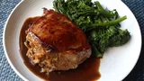

Peach-Stuffed Pork Chops

For this peach-stuffed pork chops recipe, I'm going to show you my favorite technique for stuffing pork chops, as well as one of my favorite stuffings for pork. Above and beyond producing something that's visually impressive, we are also flavoring our pork chops from the inside out with this method.
Stuffing:
- 2 strips bacon, sliced into ¼-inch pieces
- ½ cup diced onion
- 2 tablespoons diced poblano pepper
- 1 large yellow peach, peeled, pitted, and diced
- 8 saltine crackers, crushed
- 2 teaspoons fresh thyme leaves
- 1/4 teaspoon fresh thyme leaves
- 1/4 teaspoon kosher salt
- 1 pinch cayenne pepper
- 2 tablespoons chicken broth, or as needed (optional)
Pork Chops:
- 2 double-cut boneless pork chops
- salt to taste
- 1 tablespoon olive oil
- ¼ cup chicken broth (Optional)
- 2 tablespoons balsamic vinegar
- 2 tablespoons salted butter, cold
Home